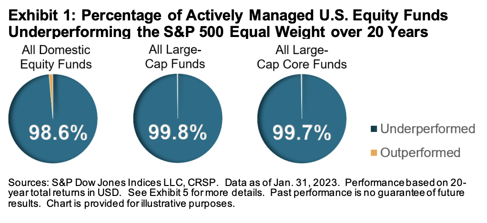

Részvénypiaci befektetések
A részvények a legnyereségesebb hosszútávú befektetések közé tartoznak. Azonban a részvények árfolyama ingadozó, és a tőzsdei szereplőknek sok tudást és időt kell befektetniük ahhoz, hogy a megfelelő vállalatokat kiválasszák. Az index alapú befektetések (ETF-ek) ezen a problémán segítenek.
Történelem
John Bogle a tőzsdetörténelem egyik legnagyobb alakja és az index alapú befektetések atyja. Ő volt a Vanguard Group alapítója és vezérigazgatója, és neki tulajdonítják az indexalapok népszerűsítését. Maga is lelkes befektető és pénzkezelő volt, a spekuláció helyett a befektetést, a rövid távú kereskedés helyett a hosszú távú türelmet és a brókeri díjak lehető legnagyobb mértékű csökkentését hirdette.
Bogle nevéhez fűződik az egyik legelső indexalap, a Vanguard 500 Index Fund (1976) megalkotása is, ami az S&P 500 indexet követte.
Mielőtt mélyebben belemennénk az ETF-ekbe, érdemes megérteni, hogy mi az az index, és miért jobb az index alapú befektetés, mint az egyedi részvényekbe való befektetés.
Indexek
Az indexek egyfajta "kosarak" a tőzsdén jegyzett részvényekből, amelyeket a tőzsdei szereplők használnak arra, hogy a piac teljesítményét mérjék.
Egy index általában egy adott ország, régió, vagy iparág legnagyobb vállalatait tartalmazza. Az indexeket a tőzsdék vagy független szervezetek állítják össze, és a részvények piaci kapitalizációja (a részvények száma szorozva az árfolyammal) alapján súlyozzák. Például:
- Az S&P 500 az Egyesült Államok 500 legnagyobb vállalatát tartalmazza. Az S&P Global Ratings nevű hitelminősítő cég üzemelteti.
- A Dow Jones az Egyesült Államok 30 legfontosabb vállalatát tartalmazza. Egy bizottság dönt a tartalmáról és pár évente frissítik.
- A NASDAQ-100 az Egyesült Államok 100 legnagyobb nem pénzügyi vállalatát tartalmazza.
- Az MSCI World iparágtól függetlenül a világ 23 fejlett országának vállalatait tartalmazza. 1970-ben indult, ezért történelmi adatok is rendelkezésre állnak.
- Az FTSE All World Index (becézve "footsie") a Föld minden táján található nagy és közepes kapitalizációjú vállalatok részvényeinek piaci teljesítményét méri. Mintegy 4000 részvényt tartalmaz közel 50 országban, beleértve a fejlett és a feltörekvő piacokat is. A globális befektethető piaci kapitalizáció több mint 95%-át fedi le.
| Index neve | Ország | Vállalatok száma | Típus |
|---|---|---|---|
| S&P 500 | USA | 500 | nagyvállalatok |
| Dow Jones | USA | 30 | nagyvállalatok |
| NASDAQ-100 | USA | 100 | nem pénzügyi vállalatok |
| MSCI World | 23 ország | ~1500 | fejlett országok |
| FTSE All World | 50 ország | ~4000 | fejlett és feltörekvő piacok |
Egyedi részvények vs. index alapú befektetési formák
Millió könyv íródott arról, hogy miért rossz ötlet egyedi részvényekbe fektetni, de most foglaljuk össze röviden:
- Tudás: Az egyedi részvények kiválasztása és figyelése sok tudást igényel, míg az indexekbe fektetéshez elég egy kis alapismeret.
- Kockázat: Egy vállalat bármikor csődbe mehet, de egy index nem. Az is elég, ha a CEO egy rossz szót szól és az árfolyam bezuhan.
- Költségek: Ha egy diverzifikált egyedi részvény portfóliót tartasz fent, az több tranzakcióval jár, mint egy darab index. Több tranzakció = nagyobb költség.
- Idő: Az egyedi részvények kiválasztása és figyelése sok időt vesz igénybe, míg az indexekbe fektetés passzív, és csak pár kattintásba kerül. Nem kell aktívan figyelni a piacot és folyamatosan ellenőrizni, hogy megfelelő döntéseket hoztál-e.
- Diverzifikáció: Egy index sok vállalatot és iparágat tartalmaz, míg egy egyedi részvény csak egyet.
- Stressz: Az egyedi részvények árfolyama jobban ingadozik (volatilitás), mint az indexeké. Az árfolyam ingadozások stresszt okozhatnak, ami befolyásolhatja a döntéseidet.
John C. Bogle
“Don't look for the needle in the haystack. Just buy the haystack!”
"Ne keress tűt a szénakazalban. Vedd meg a szénakazalt!"
Alapok formái
A két legelterjedtebb befektetési forma a tőzsdén kereskedhető alap (ETF - Exchange Traded Fund) és a befektetési alap (mutual fund). (Igen, elég szerencsétlenek a magyar fordítások.)
A befektetési alapokat tipikusan bankok és egyéb pénzügyi szolgáltatók kínálják és aktívan kezelik őket. Ezzel szemben az ETF-ek - ahogy neve is sugallja - szimplán megvásárolhatóak a tőzsdén is, pont úgy, mint a hagyományos részvények. Tipikusan egy indexet, régiót vagy egy szektort követnek. Akadnak egzotikusabbak is, de az egyszerűség kedvéért lentiekben az ETF-ekre mindig az index alapú befektetéseket értjük.
Aktív vs. passzív alapok
Aktív alapok:
- Céljuk, hogy a piac teljesítményét megelőzzék.
- Portfólió menedzserek kezelik, akik "kézzel" válogatják össze a portfólióban lévő részvényeket.
- Magas költségekkel járnak, mivel a menedzsereknek fizetni kell a munkájukért.
Passzív alapok:
- Célja, hogy egy adott index teljesítményét kövessék.
- Alacsonyabb költségekkel járnak, mivel nincs szükség portfólió menedzserekre. Az alapokat algoritmusok kezelik, amik pontosan igyekeznek követni az indexet. (Lásd még: tracking error)
Az elmúlt évtizedek során elvégzett tanulmányok egyértelműen kimutatták, hogy az aktívan menedzselt alapok átlagban nem tudják megelőzni az indexek teljesítményét. Cserébe viszont magasabb költségekkel járnak, ami hosszú távon jelentős különbséget jelent a hozamokban.
Az S&P benchmark-ja 2003 és 2023 között:
 Az aktívan kezelt alapok 99%-ban alul teljesítették az S&P 500 indexet 20 éves időtávon.
Konzekvencia
A fentiek alapján az ETF-ek a legjobb választásnak tűnnek a hosszútávú befektetésekhez.
A szakemberek egyetértenek abban, hogy egy all-world index alapú ETF-nek kell dominálnia a portfóliódat. Sőt, bőven elég ha egyetlen egy darab ETF-et tartasz fent. A legtöbb ETF amúgy is fedésben van egymással, így többet tartani felesleges.
John C. Bogle
"When there are multiple solutions to a problem, choose the simplest one"
"Ha egy problémára több megoldás is létezik, válaszd a legegyszerűbbet."
Folytatás
Az ETF-ekről további részleteket az ETF oldalon találsz.